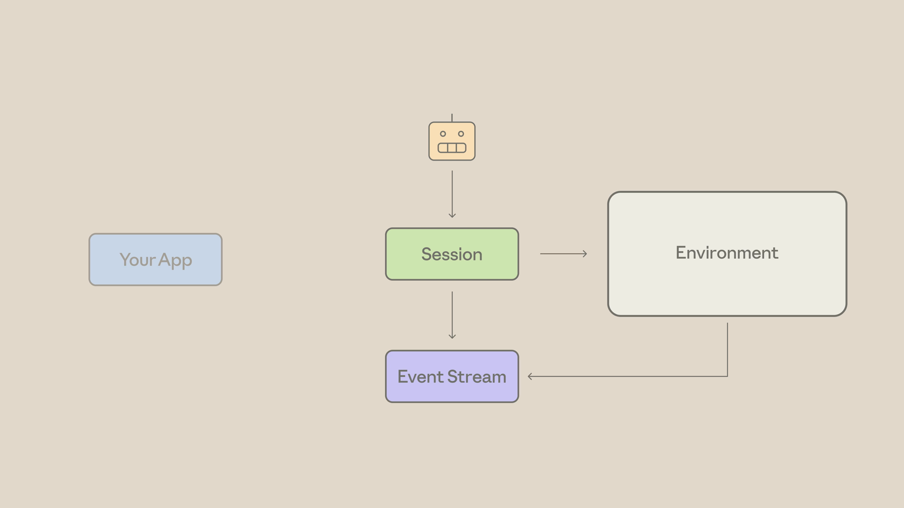
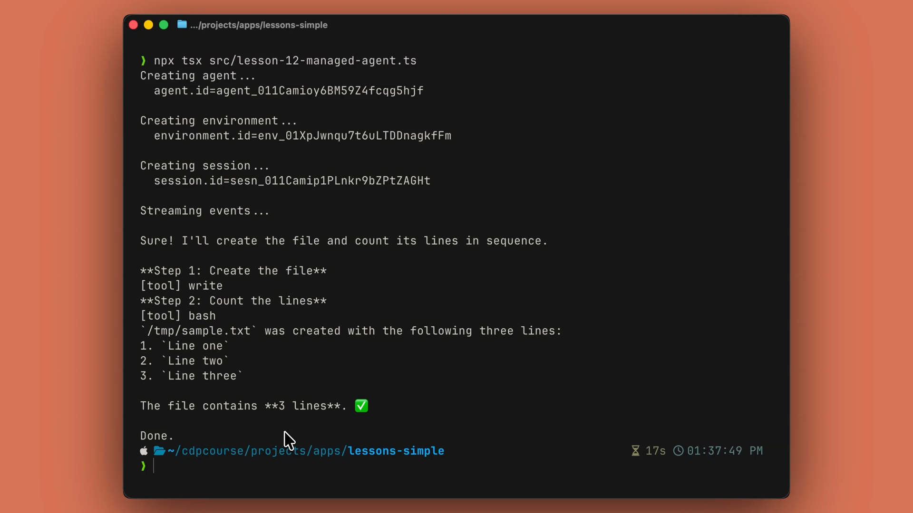
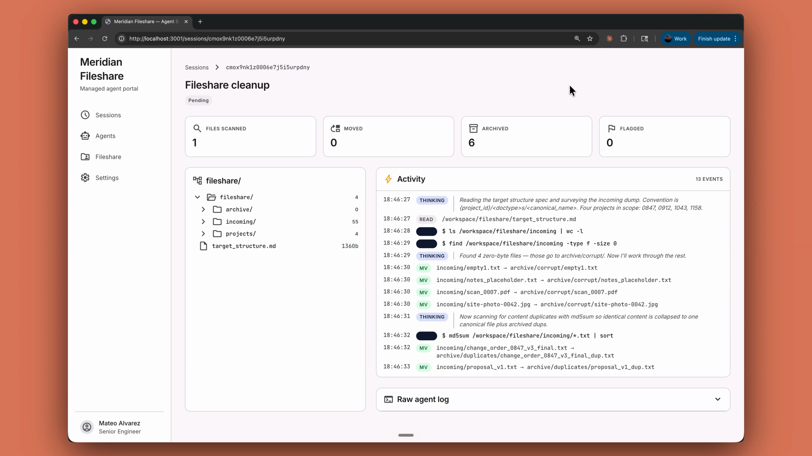

Первый managed agent своими руками
Чему научитесь
Видео 4:02 и текст урока
К концу урока вы сможете:
- объяснить, что такое managed agent и чем он отличается от цикла агента на вашем сервере;
- назвать четыре примитива — агент, окружение, сессию и события — и порядок, в котором их создают;
- запустить простейший managed agent: открыть поток событий до стартового сообщения и разобрать события
agent.message,agent.tool_useиsession.status_idle; - решать, когда выбрать managed agent, а когда — ручной цикл.
Видео и текст урока.
Если вы уже писали цикл агента вручную, то знаете, как это устроено: циклы while, ветвления по stop_reason, выполнение инструментов. Это работает, и для многих функций приложения такой подход как раз верный. Но иногда цикл идёт очень долго — минуты, а то и часы, — задействует много инструментов, хранит состояние, записывает файлы и должен продолжить работу после сбоя сети. В этот момент запускать цикл на своём сервере уже не хочется. Хочется его кому-то поручить. Для этого и существуют managed agents.
Что такое managed agent?
Managed agent — это цикл агента, который работает не на вашей инфраструктуре, а на инфраструктуре Anthropic. Вы один раз описываете агента, даёте ему окружение для работы и запускаете сессию. Цикл выполняет Anthropic, а вы просто получаете поток событий, пока агент работает.
Managed agents по умолчанию включены для любого аккаунта API — особый доступ не нужен.
Четыре примитива
Примитивов четыре, и они идут в определённом порядке:
- Агент (agent) — «персона»: модель, системный промпт и набор инструментов. Его можно использовать во многих запусках.
- Окружение (environment) — где работает агент: в облаке или на вашей собственной инфраструктуре (self-hosted), с какими сетевыми настройками и так далее.
- Сессия (session) — один запуск агента в определённом окружении. Сессия — это единица работы.
- События (events) — сообщения, которые идут туда и обратно: действия агента, вызовы инструментов, результаты, ответы.
Вот как эти части связаны между собой: ваше приложение общается с сессией, сессия ведёт работу внутри окружения, а всё, что происходит, возвращается через поток событий:

Обратите внимание, что изменилось: вы не крутите цикл while. Вы отправляете события и читаете события.
Самый маленький managed agent
Соберём самый маленький managed agent, который делает что-то полезное: создаёт файл во временном каталоге, считает в нём строки и сообщает результат.
В качестве инструментов возьмём набор инструментов агента (agent toolset) — готовые инструменты Anthropic для работы с файлами, bash и вебом. Для этой задачи их вполне хватает, так что определять собственные инструменты не придётся.
Шаг 1. Создаём агента
Сначала создаём агента. Обратите внимание: набор инструментов агента задан прямо в массиве tools — это и есть готовый набор:
import anthropic
client = anthropic.Anthropic()
agent = client.beta.agents.create(
name="Line Counter",
model="claude-opus-5",
system="You are a helpful agent that completes small file tasks.",
tools=[
{"type": "agent_toolset_20260401", "default_config": {"enabled": True}}
],
)
Помните: агент используется многократно. Создайте его один раз и запускайте во многих сессиях.
Шаг 2. Создаём окружение
Дальше — окружение. Оно задаёт песочницу, в которой работает агент: облачную, с сетью в режиме limited. В режиме limited песочница и веб-инструменты могут обращаться только к хостам, перечисленным в allowed_hosts. Этой задаче сеть не нужна, поэтому мы не перечисляем ни одного. Режим unrestricted берите, только если агенту нужны сайты, которые нельзя перечислить заранее. Каждая сессия получает собственную песочницу, и именно там будет записан файл:
environment = client.beta.environments.create(
name="line-counter-env",
config={
"type": "cloud",
"networking": {"type": "limited"},
},
)
Шаг 3. Создаём сессию
Затем создаём сессию с нашим агентом и окружением, а также, по желанию, с названием. Сессия — это единица работы:
session = client.beta.sessions.create(
agent=agent.id,
environment_id=environment.id,
title="Count lines demo",
)
Шаг 4. Сначала открываем поток, потом отправляем стартовое сообщение
Теперь открываем поток событий — и обратите внимание: делаем это первым делом. Поток доставляет только те события, которые произошли после его открытия, поэтому всегда открывайте его до того, как отправить стартовое сообщение. Затем отправляем сообщение пользователя в уже открытый поток:
with client.beta.sessions.events.stream(session_id=session.id) as stream:
# Stream is open — now send the kickoff
client.beta.sessions.events.send(
session_id=session.id,
events=[
{
"type": "user.message",
"content": [
{
"type": "text",
"text": "Create a file in the temp directory, "
"count its lines, and report back.",
}
],
}
],
)
Обратите внимание: параметр называется events, во множественном числе. В этом API всё передаётся событиями.
Шаг 5. Читаем поток
Наконец, читаем поток — всё ещё внутри блока with из шага 4. Для этого примера важны три типа событий:
agent.message— текст Claude;agent.tool_use— какой инструмент выбрал Claude;session.status_idle— агент остановился и ждёт ввода.
Этот пример останавливается на первом событии простоя (idle). В своём приложении, прежде чем считать работу законченной, проверяйте event.stop_reason.type: end_turn означает, что агент закончил свой ход или вы его прервали, а requires_action — что вызов инструмента ждёт ответа от вас.
for event in stream:
if event.type == "agent.message":
for block in event.content:
if block.type == "text":
print(block.text, end="", flush=True)
elif event.type == "agent.tool_use":
print(f"\n[tool] {event.name}")
elif event.type == "session.status_idle":
print("\n--- Agent done ---")
break
Запустите скрипт — и увидите, как агент рассуждает вслух: настоящий текст, выбранные инструменты и итоговый ответ. И всё это выполняется в контейнере Anthropic, а не в вашем:

write и bash, в итоге — «The file contains 3 lines». В видео запущена TypeScript-версия того же примера.Компромисс
Обычно цикл агента — наш собственный, и всё в нём приходится контролировать самим. С managed agents вы поручаете другим и этот цикл, и песочницу, и возобновление работы, а сами просто читаете поток событий по мере их поступления. История событий сессии хранится на сервере. Поэтому если соединение оборвалось, откройте новый поток, запросите список прошлых событий, чтобы увидеть, что вы упустили, и пропускайте события живого потока, которые уже вернул этот список. Код — в разделе документации Reconnect without missing events.
В рабочем приложении такая схема подходит для долгих задач, связанных с файлами, — задач вида «разбери это за меня». Представьте уборку общего файлового хранилища: managed agent читает описание целевой структуры каталогов, обходит захламлённую папку входящих, раскладывает файлы по нужным папкам проектов, отправляет в архив дубликаты и мусорные файлы нулевого размера и помечает всё, что не может уверенно куда-то отнести, — и всё это в одной сессии, которая может минутами обрабатывать тысячи файлов. Вот как это выглядит в настоящем приложении — дашборд уборки файлового хранилища в реальном времени показывает действия агента, пока тот сортирует, архивирует и помечает файлы:

Итог
- Managed agents — это цикл агента, который выполняют за вас, — на инфраструктуре Anthropic, а не на вашем сервере.
- Порядок такой: создать агента, создать окружение, создать сессию, отправлять события в сессию и получать поток событий обратно.
- Агент (модель, системный промпт, набор инструментов) используется во многих запусках; сессия — один запуск; через события передаётся всё.
- Открывайте поток событий до того, как отправить стартовое сообщение: он доставляет только события, произошедшие после его открытия.
- Следите за тремя событиями:
agent.message(текст),agent.tool_use(выбор инструмента) иsession.status_idle(агент остановился и ждёт ввода, аstop_reason.typeговорит почему). - Берите managed agents, когда цикл шёл бы слишком долго, делал бы слишком много или должен выдерживать сбои. Берите ручной цикл, когда вам нужен полный контроль.
Дальше
Следующий урок — «Разработка с Claude Code»: вместо того чтобы писать интеграцию с API вручную, мы поручим Claude Code дописать её по файлу-заготовке на тех же примитивах, что прошли в курсе.
Оригинал урока: Building your first managed agent.